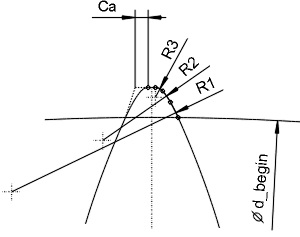

|
|
|


根据 Hirn 的齿廓修形
从特定直径 dbegin 开始，将一条与渐开线相切的进入曲线应用于齿顶。这条进入曲线由三段圆弧组成。曲线中的弯曲从一段圆弧到另一段圆弧逐渐增加，因此最后一段圆弧与齿顶圆相切。这种修形后的齿形（也称为混合齿）具有显著的好处，因为尽管生产方法相对不精确，它仍能实现极其安静的运转。因此，这种修形优先应用于塑料产品（参见图 15.80）。

图 15.80：根据 Hirn 的齿廓修形
进入曲线通常仅应用于端面重合度大于 2.1 的深齿形。此外，KISSsoft 可以使用其尺寸计算功能为进入曲线和齿顶修形量建议合适的起点（直径）。为此，它使用齿廓修形计算（参见"修形"章）。
进入曲线的起点定义如下：
- 对于端面重合度为 2.0 的情况：缩短工作渐开线，直到端面重合度恰好为 2.0。
- 对于端面重合度小于 2.0 的情况：计算直径，以便产生平均齿顶修形，即大于 1.0 的端面重合度减少约 50%。
- 例如，从 1.8 到 1.8 - 0.5 . 0.8 = 1.4。
精确的定义是：
对于端面重合度大于 2.0 的情况：dBeginn = Minimum (dPunktD, dPunktE0.2)
对于端面重合度 < 2.0 的情况：dBeginn = Minimum (dPunktDE, dPunktE0.2)
齿顶处的修形量 Ca 定义如下：
- 对于齿顶厚小于 0.21 .mn 的情况：0.5 . 齿厚 - 0.01 .mn
- 对于齿顶厚大于 0.21 .mn 的情况：0.10 .mn...0.12 .mn
Profile modification according to Hirn
An entry curve that passes into the involute tangentially is applied to the tooth tip starting from the specific diameter dbegin. This entry curve consists of three arcs of circle. The bend in the curve increases from arc of circle to arc of circle, so that the final arc of circle is tangential to the tip circle. This modified tooth form (also called a hybrid tooth) has significant benefits, because it results in extremely quiet running, despite relatively imprecise production methods. For this reason, the modification is applied for plastic products, for preference (see Figure 15.80).
Figure 15.80: Profile modification according to Hirn
An entry curve is usually only applied to deep tooth forms with transverse contact ratios of greater than 2.1. In addition, KISSsoft can use its sizing function to suggest a suitable starting point (diameter) for the entry curve and the tip relief value. To do this, it uses the profile modification calculation (see chapter Modifications).
The start of the entry curve is defined as follows:
- For a transverse contact ratio of 2.0: The active involute is reduced until the transverse contact ratio is exactly 2.0.
- For a transverse contact ratio of less than 2.0: The diameter is calculated so that an average tip relief is created, i.e. a transverse contact ratio of above 1.0 is reduced by approximately 50%.
- For example, from 1.8 to 1.8 - 0.5 . 0.8 = 1.4.
The exact definition is:
For a transverse contact ratio greater than > 2.0 : dBeginn = Minimum (dPunktD, dPunktE0.2)
For a transverse contact ratio < 2.0 : dBeginn = Minimum (dPunktDE, dPunktE0.2)
The relief Ca at the tip is defined as shown here:
- For top lands less than 0.21 .mn: 0.5 . Tooth thickness - 0.01 .mn
- For top lands greater than 0.21 .mn: 0.10 .mn...0.12 .mn